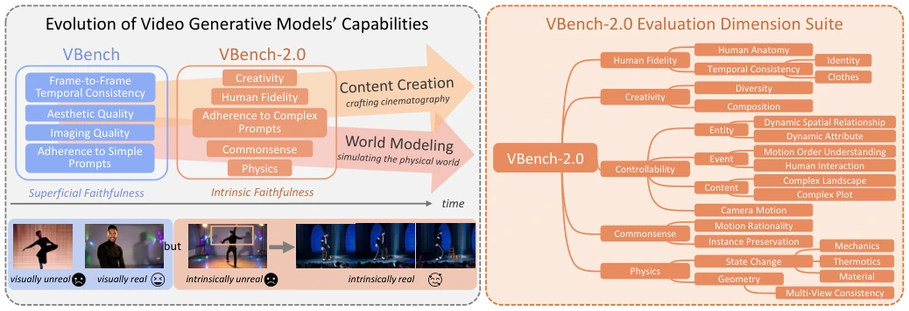
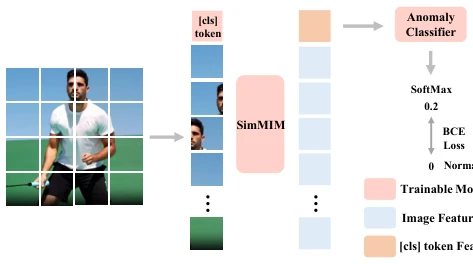
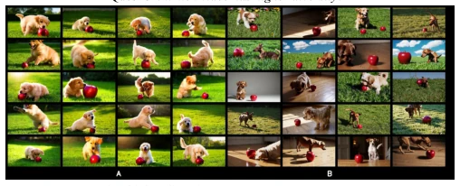
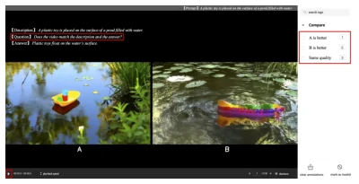
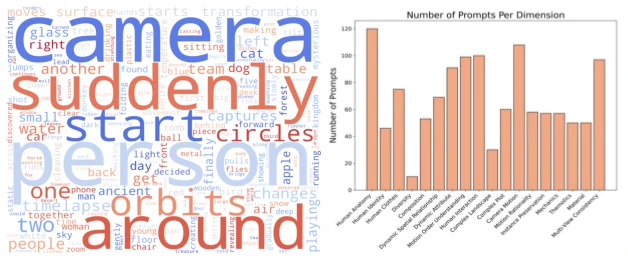
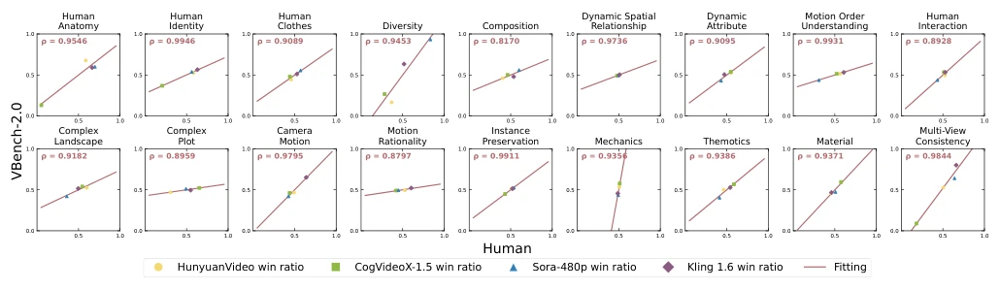

VBench-2.0: Advancing Video Generation Benchmark Suite for Intrinsic Faithfulness
Dian Zheng, Ziqi Huang, Hongbo Liu, Kai Zou, Yinan He, Fan Zhang abspdf
论文点评Review
VBench-2.0 终于把视频生成的评测从“长得像不像”升级到了“物理对不对”。之前的 VBench 主要盯着帧间一致性和美学，这就像只考学生背单词不考阅读理解，导致模型虽然画面连贯，但经常违反物理常识。现在的模型像 Sora 虽然画面逼真，但在水流、重力等基础物理上经常翻车。这篇工作试图填补“内在忠实度”的空白，引入物理、常识、人体解剖等维度，试图构建更全面的评估体系。不过，评测本身还是依赖 VLM 和 LLM，用“会做梦的模型”去评测“生成视频的模型”，难免有幻觉叠加的风险，虽然作者做了大量人工对齐，但自动化评测的鲁棒性仍是悬顶之剑。对于追求世界模型的具身智能领域，这套基准是必要的，它充当了“体检报告”，但别指望它能直接解决生成模型的物理引擎缺陷，它更多是暴露问题而非解决问题。
VBench-2.0 has finally upgraded video generation evaluation from "visual resemblance" to "physical correctness". Previous VBench mainly focused on inter-frame consistency and aesthetics, which is like only testing students on vocabulary memorization without reading comprehension, resulting in models having coherent visuals but often violating physical common sense. Current models like Sora, although visually realistic, often fail on basic physics such as water flow and gravity. This work attempts to fill the gap of "intrinsic fidelity", introducing dimensions such as physics, commonsense, and human anatomy, attempting to build a more comprehensive evaluation system. However, the evaluation itself still relies on VLMs and LLMs; using "dreaming models" to evaluate "video generation models" inevitably carries the risk of hallucination stacking. Although the authors performed extensive human alignment, the robustness of automated evaluation remains a sword of Damocles. For the embodied AI field pursuing world models, this benchmark is necessary; it acts as a "check-up report", but do not expect it to directly solve the physical engine defects of generation models; it more exposes problems than solves them.
研究动机Motivation
现有视频生成基准如 VBench [25], [26] 主要评估“表面忠实度”，即视觉逼真度和基本提示遵循，但这已接近饱和。随着 Sora [28]、Kling [29] 等模型出现，视频在视觉上已足够连贯，但在物理规律、常识推理和人体解剖上仍存在严重缺陷。例如，模型可能生成违反重力或物体融合的视频，这在 AI 辅助电影制作中是不可接受的。对于具身智能和 AI 辅助电影制作等应用，仅靠视觉逼真不足以构建真正的“世界模型”[20]。现有专用基准如 PhyGenBench [72] 或 T2V-CompBench [73] 仅覆盖单一领域，缺乏系统性，无法全面衡量模型的综合能力。因此，亟需一个能评估“内在忠实度”的综合基准，涵盖物理、常识、可控性等深层能力，以推动模型从“看起来真实”向“本质上真实”演进，为下一代视频生成模型设定更高标准。
Existing video generation benchmarks such as VBench [25], [26] mainly evaluate "surface fidelity", i.e., visual realism and basic prompt following, but this is nearing saturation. With the emergence of models such as Sora [28], Kling [29], videos are visually coherent enough, but still have serious defects in physical laws, commonsense reasoning, and human anatomy. For example, models may generate videos violating gravity or object fusion, which is unacceptable in AI-assisted filmmaking. For applications such as embodied AI and AI-assisted filmmaking, relying solely on visual realism is insufficient to build true "world models" [20]. Existing specialized benchmarks such as PhyGenBench [72] or T2V-CompBench [73] only cover single domains, lack systematics, and cannot comprehensively measure the model's comprehensive capabilities. Therefore, there is an urgent need for a comprehensive benchmark capable of evaluating "intrinsic fidelity", covering deep capabilities such as physics, commonsense, and controllability, to drive models to evolve from "looking real" to "essentially real", setting higher standards for next-generation video generation models.
VBench-2.0 constructs five evaluation dimensions: Human Fidelity, Controllability, Creativity, Physics, and Commonsense, subdivided into 18 sub-capabilities. The evaluation framework adopts a "General Model + Expert Detection" hybrid strategy. First, for complex semantics (such as plot, interaction), the "Text Description Alignment" scheme is used: VLM generates video descriptions, LLM compares with reference text for judgment, utilizing LLM's reasoning ability to make up for VLM's deficiencies. Second, for visual concepts (such as attribute changes), the "Multi-turn QA based on video" scheme is adopted, reducing misjudgment through redundant questions. For specific domains, such as human anatomy, a specialized anomaly detector (Fig 3) was trained, utilizing ViT to detect body part anomalies, combined with YOLO-World for feature extraction. Prompt suites are customized for each dimension to ensure decoupled evaluation (Fig 9), for example, allowing only one entity to move in dynamic spatial relationships. Additionally, a human preference annotation process (Fig 10) was designed, verifying the consistency between automated evaluation and human judgment through pairwise comparison, ensuring the credibility of evaluation results. The entire process includes safeguards such as pre-filtering and redundant questioning to reduce hallucinations.
Tested on 4 SOTA models (HunyuanVideo, CogVideoX-1.5, Sora-480p, Kling 1.6). Results show that although Sora performs excellently in human anatomy, it scores lower on dynamic attributes and complex plots, while Kling performs better in physics. Evaluation metrics are scores for each dimension and win rates. The key finding is that existing models still have significant shortcomings in commonsense reasoning and physics simulation, such as object fusion or unreasonable motion. The authors conducted a large-scale human alignment experiment (Fig 11), calculated the Spearman correlation coefficient, proving that VBench-2.0's automated scoring is highly consistent with human preferences (most dimensions ρ > 0.9). This validates the effectiveness of the benchmark, but also reveals the deficiencies of current models in deep logical understanding. Additionally, input was uniformly processed through Prompt Refiner, ensuring the fairness of comparison. Experimental data indicates that video generation is still far from true world models, especially in physics and commonsense reasoning.
其他图片Other Figures

Fig. 1: Overview of VBench-2.0. (a) Scope of VBench-2.0. Video generative models have progressed from achieving superficial faithfulness in fundamental technical aspects such as pixel fidelity and basic prompt adherence, to addressing more complex challenges associated with intrinsic faithfulness, including commonsense reasoning, physics-based realism, human motion, and creative composition. While VBench primarily assessed early-stage technical quality, VBench-2.0 expands the benchmarking framework to evaluate these advanced capabilities, ensuring a more comprehensive assessment of next-generation models. (b) Evaluation Dimension of VBench-2.0. VBench-2.0 introduces a structured evaluation suite comprising five broad categories and 18 fine-grained capability dimensions.

Fig. 3: Human Anatomy Detector Framework. The [cls] token is used to aggregate information related to anomalies in the image. The human body, hand, and face detectors share the same pipeline with different data. The input is frame level and pre-detected.

Fig. 5: Visualization for Diversity.

Fig. 10: Interface for Human Preference An- notation. Top: Question descriptions. Right: Choices available to annotators. Bottom left: Controls for stopping and playback.

Fig. 9: Overview of Prompt Suite Statistics. Left: distribution of words in the prompt suites. Right: number of prompts per evaluation dimension.

Fig. 11: Human Alignment of VBench-2.0 Evaluation. Each plot represents the alignment verification for a specific VBench- 2.0 dimension. In each plot, a dot corresponds to the human preference win ratio (horizontal axis) and the VBench-2.0 evaluation win ratio (vertical axis) for a given video generation model. A linear fit is applied to visualize the correlation, and Spearman’s correlation coefficient (ρ) is computed for each dimension. Experiments show that VBench-2.0 evaluations closely align with human judgement in all dimensions.